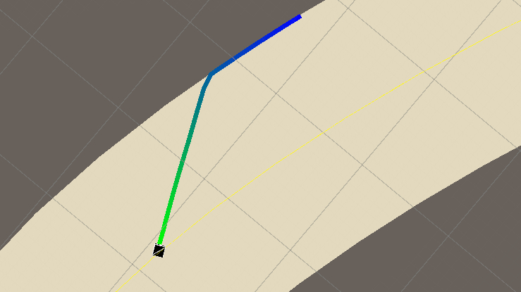
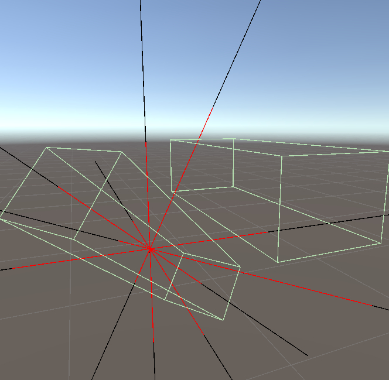
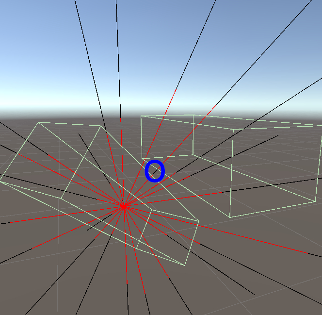

Devlog 004 – Collision Handling Prototype
Building on the simple AI movement prototype, vehicle collisions were introduced to the game logic. Instead of relying on Unity's general purpose physics engine, I started to implement my own (more simplistic) physics logic. The vehicles are now equipped with a custom box-collider and a collision handler checks for overlap between these boxes in the LateUpdate cycle. Overlapping vehicles are separated by an iterative scheme.
Motivation and Perspective
The driving reason behind this decision to write a custom physics engine is that the movement of grounded vehicles is restricted to the track and solved in the 2D \((l,w)\)-coordinate space of the tracks. Rigidbody physics would interfere with this movement logic (and I have little intention of controlling the movement of the vehicles via the 2nd derivative i.e. the forces acting on them).
I aim for an arcady experience, and I imagine the game's systems to function rather simplistic. Collisions on vehicles might introduce some torque to them in the long run, but currently, I only aim to resolve the overlap of colliding vehicles. That being said, I aim for a visual damage system by separating vehicles into components, and moving from a collider around the entire vehicle to a set of colliders that correspond to the components. On impact, they can be scratched and deformed through texture work (including bump-up mapping) and maybe even compressed along a specific axis.
However, this remains a vision for now. The more immediate issue is to bring some structure into the physics systems: There will be three kinds of collisions.
- First, vehicles can collide with other vehicles (this is what this blog post is dealing with).
- Second, vehicles can collide with the railing of the tracks. This will be handled by the stepping logic directly and is currently included by simply clamping the movement along the lateral parameter \(w\). The effect can be seen using the
TrackTesterintroduced last time around. This is not a proper solution for railing collisions, but serves to illustrate the idea of handling them inside theTrackSegment.UpdatePositionmethod. - Last, vehicles can fall from the track if there is no railing, or they are sent flying by jumps in the track. In such a case, the vehicle might collide with scenery. Such collisions shall result in the instant destruction of the player vehicle. Life is punishing, after all.

Separating Axis for Box Colliders
While I was considering to build a prototype, I had mainly thought of how the track parametrization shall be done and how movement could be handled. On the other hand, I hadn't thought so much about collision handling. I knew I wanted to handle railing collisions in the tracks local coordinate space when time-stepping the movement but I hadn't thought too much about scenery or vehicle-with-vehicle collisions. I was pretty certain that Unity would have all the necessary features built into the Collider component, even if I would not use the rigidbody system. This seems not to be the case, however, and so I started to read up on collision detection:
For the time being, the AI vehicles are boxes. To check whether or not two boxes are overlapping, the Separating Axis Theorem (SAT) based on the Hyperplane separation theorem can be used. The general idea is the following. If two boxes are separated, there exists a plane in-between them i.e. there is a plane that defines two half spaces such that each half space contains one box only. If such a plane can be found, the two boxes are separated.
There is another way to think about this: If we would project the set \(B_i\) that are the boxes on an axis \(\textbf{a}\), their projections might overlap. This is determined by comparing the support function
and
If an axis \(\textbf{a}\) can be found on which there is no overlap, the two boxes are separated. Note that all these statements are true for convex sets.
These ideas are equivalent when thinking in terms of Supporting Hyperplanes. We can find a point \(\textbf{S}\) on the box's surface along the direction \(\mathbf{d}\) such that a plane orthogonal to \(\mathbf{d}\) contains at least \(\textbf{S}\), and all of the box is on one side of the plane.
Such a point can be found by asking what point in the support function results in the supremum and for a box, the only candidates are the corner points. Overlap along an axis is can be tested like this then:
private Vector3 SupportPoint(Vector3 direction)
{
direction.Normalize();
float dx = Vector3.Dot(direction, right);
float dy = Vector3.Dot(direction, up);
float dz = Vector3.Dot(direction, forward);
float hx = 0.5f * a;
float hy = 0.5f * b;
float hz = 0.5f * c;
Vector3 edge = right*Mathf.Sign(dx)*hx + up*Mathf.Sign(dy)*hy + forward*Mathf.Sign(dz)*hz;
return edge + center;
}
public (float min, float max) Support(Vector3 axis)
{
axis.Normalize();
float a = Vector3.Dot(axis, SupportPoint(axis));
float b = Vector3.Dot(axis, SupportPoint(-axis));
return (Mathf.Min(a, b), Mathf.Max(a, b));
}
public bool SupportOverlap(IVehicleCollider other, Vector3 axis)
{
(float min1, float max1) = Support(axis);
(float min2, float max2) = other.Support(axis);
return max1 >= min2 && min1 <= max2;
}
The question now is, which axis should be tested. In 2D, for collision detection between two rectangle, separating lines might be found parallel to the edges. In 3D however, there are cases in which it is not sufficient to test along the face normals only. Such a case is shown here:

Overlap test along face normals only

Overlap test including edge cross products
In these images, black lines indicate the axes along which the overlap is tested. Red shows the projection of the boxes onto these axes. When the tests are only done along the face normals, the projections always overlap. Only if the cross products of edges are included, an axis is found along which the two boxes appear separated.
For simple boxes, this means that for collision query, we have to check 6+9 axes for every collider (3 face normals per box, and 3x3 cross products of two edges, one from each box). However, while the vehicles are on the track, checks along the forward and right direction are practically sufficient.
Resolving Overlap
While this answers the question how collisions can be detected, it does not immediately help to resolve these collisions. For the current AI behavior, collisions mainly occur while the vehicles drive in the same direction (watch the boxes fading into each other in Devlog 003 - AI Movement Prototype). I gather that a usual approach is to determine the impact normal amongst the face normals as the direction of minimal penetration, and the separate the boxes along this axis. To prevent them from getting locked at small corner overlaps, I wanted to separate them along the line connecting the box centers instead. For a simple procedure, that does not allow for torque, the solution more consistent with the model chosen was to project the smallest overlap along one of the boxes main axes onto the center-to-center line.
The collisions are resolved as follows: In every frame, during the Update-cycle, the vehicles will be moved along the track. Then, in the LateUpdate-cycle, the CollisionHandler will determine whether there are overlaps between the vehicle's colliders. Then, overlapping vehicles will be separated according to their overlap, estimated from the smallest face-normal overlap projected onto the center-to-center line. The vehicles are separated by using the ConstraintMove(Vector3 direction) method that handles the translation in the track's \((l,w)\) parameter space rather than in 3D world space (if the vehicle is grounded, that is). The total overlap is split according to the vehicle masses.
By the described scheme, new overlaps might be introduced: vehicle A might be pushed back to resolve an overlap with vehicle B, only to end up being overlapped with vehicle C. Also, the constraint movement might not push one of the vehicle sufficiently far - a railing might prevent this. For this reason, the procedure is repeated up to five times. If no more overlaps are found, the Collision Handler will break. In the little test run shown in the video at the top of the page, the statistics are
1 Iteration : 497
2 Iterations : 85
3 Iterations : 10
4 Iterations : 1
5 Iterations : 2
Naturally, due to the bare-bones state everything is in currently, this has only limited meaning. The Collision Handler currently reads like this:
public class CollisionHandler : Singleton<CollisionHandler>
{
private RaceController raceController;
private List<IVehicle> vehicles { get => raceController?.vehicles; }
public void Start()
{
raceController = GameController.instance.raceController;
}
public void LateUpdate()
{
Resolve();
}
private void Resolve()
{
int maxIter = 5;
int iter = 0;
for (int i=0; i<maxIter; i++)
{
var overlaps = GetOverlaps();
// stop routine if there are no more overlaps
if (overlaps.Count < 1)
{
break;
}
iter = i + 1;
// resolve step
foreach (var ovlp in overlaps)
{
var veh1 = ovlp.Item1;
var veh2 = ovlp.Item2;
var dir = veh2.position - veh1.position;
if (dir.sqrMagnitude < 0.0001f)
dir = veh1.forward;
else
dir.Normalize();
Span<Vector3> axes = stackalloc Vector3[]
{
veh1.right,
veh1.forward,
veh2.right,
veh2.forward
};
float minProj = 0.1f;
float requiredMove = float.PositiveInfinity;
// Search minimal overlap
foreach (var ax in axes)
{
var axis = ax;
float proj = Vector3.Dot(dir, axis);
axis *= Mathf.Sign(proj);
// Ignore nearly orthogonal constraints
if (Mathf.Abs(proj) < minProj)
continue;
// projection overlap
var extend1 = veh1.vehicleCollider.SupportPoint(axis);
var extend2 = veh2.vehicleCollider.SupportPoint(-axis);
var overlap = Vector3.Project((extend1 - extend2), axis);
// move candidate
float move = Vector3.Dot(overlap, axis);
requiredMove = Mathf.Min(requiredMove, move);
}
var err = Vector3.zero;
if (requiredMove <= 1.5f * veh1.vehicleCollider.radius)
err = -dir * requiredMove;
// add a minimum bounce
err -= (0.2f / maxIter) * dir;
var cor1 = veh2.mass / (veh1.mass + veh2.mass) * err;
var cor2 = -veh1.mass / (veh1.mass + veh2.mass) * err;
Debug.Log($"Collision err length = {err.magnitude}: cor1 = {cor1}, cor2 = {cor2}");
var o1 = veh1.position;
var o2 = veh2.position;
veh1.ConstraintMove(cor1, 1);
veh2.ConstraintMove(cor2, 1);
}
}
Debug.Log($"Vehicle Collisions resolved after {iter} iterations.");
}
private List<(IVehicle, IVehicle)> GetOverlaps()
{
var overlaps = new List<(IVehicle, IVehicle)>();
int N = vehicles.Count;
for (int i=0; i<N; i++)
{
var v1 = vehicles[i];
for (int j = i+1; j < N; j++)
{
var v2 = vehicles[j];
if (v1.Overlaps(v2))
{
overlaps.Add((v1, v2));
Debug.Log($" Overlap on vehicles {v1.name} and {v2.name}");
}
}
}
return overlaps;
}
}
What's next for collision handling?
So this routine has multiple issues. For one, the interfaces are not good yet. Since the vehicles will end up being composed from multiple sub-colliders, the vehicles themself currently have a method to test for overlap. It could be argued that this should stay within the vehicle colliders or be taken care of by the collision handler. Since vehicle collision is calculated from the projection overlap, the minimum overlap can be found in this routine already, so the overlap query could return this information already.
More important: when the difference between vehicle speeds becomes larger, there is a chance now that vehicles tunnel through each other. The vehicle movement is already performed in substeps, and instead of having all vehicle movements carried out in the Update-cycle, and collisions being resolved during LateUpdate, the logic could be changed so that in every substep, all vehicles are moved and collision is tested and resolved immediately afterwards.
If the top vehicle speed would be around \(450\text{ m/s}\), and vehicles have a typical length of \(5.5\text{ m}\), that means that substeps should not be longer than \(6.1 ms\). This would be achieved by 3 substeps at \(60\) fps.
Something Extra: Radial Points
Before looking at boxes, I started off with elongated spheres, and overlap was approximated from radial points. When I switched to box colliders, I thus implemented a radial point method first. While this method is currently unused, I still found the algorithm conceptually interesting. Here it is:
public (Vector3 radialPoint, Vector3 normal) RadialPointBox(Vector3 direction)
{
// Computes the point on a box in a given direction d0 from the center
// IDEA point on plane:
// 1) the point P=t*d0 lies on the box up plane if <P,u> = b/2
// 2) thus, <P,u> = t*<d0,u> = b/2 => t = b/(2*<d0,u>)
// IDEA nearest point:
// 3) the point in direction d0 can be computed on all planes
// 4) the radial point on the box is the one with smallest t
// direction from center outward
direction.Normalize();
// local coordinates
float dx = Vector3.Dot(direction, right);
float dy = Vector3.Dot(direction, up);
float dz = Vector3.Dot(direction, forward);
// find points on surfaces
float hx = 0.5f * a;
float hy = 0.5f * b;
float hz = 0.5f * c;
float tx = (Mathf.Abs(dx) > 1e-6f) ? hx / Mathf.Abs(dx) : float.PositiveInfinity;
float ty = (Mathf.Abs(dy) > 1e-6f) ? hy / Mathf.Abs(dy) : float.PositiveInfinity;
float tz = (Mathf.Abs(dz) > 1e-6f) ? hz / Mathf.Abs(dz) : float.PositiveInfinity;
// return nearest
float t = float.PositiveInfinity;
Vector3 n = Vector3.zero;
if (tx < t) { t = tx; n = Mathf.Sign(dx)*right; }
if (ty < t) { t = ty; n = Mathf.Sign(dy)*up; }
if (tz < t) { t = tz; n = Mathf.Sign(dz)*forward; }
return (transform.position + t * direction, n);
}
The idea here is the following: the surfaces of the bounding box are subsets of a plane. E.g. in case of the upper surface that plane would be parallel to the right and forward direction and located \((b/2)\) away from the center point. A point \(\mathbf{P}\) that is located on that plane thus needs to fulfill
where \(\mathbf{u}\) is the vector pointing in the direction of transform.up. From the center point, the direction of \(\mathbf{P}\) is \(\mathbf{d}_0\), so that
Thus, the intersection point \(\mathbf{P}\) of a line along \(\mathbf{d}_0\) can be computed from
The box has six surfaces, and all of them are subsets of planes. Up to three of them will have an intersection point along a given direction from the center point. The one with the shortest distance is the one that is actually located on the bounds. The same logic allows to determine the corresponding normal vector too.
But the radial point is not the nearest point to an arbitrary point along \(\mathbf{d}_0\).